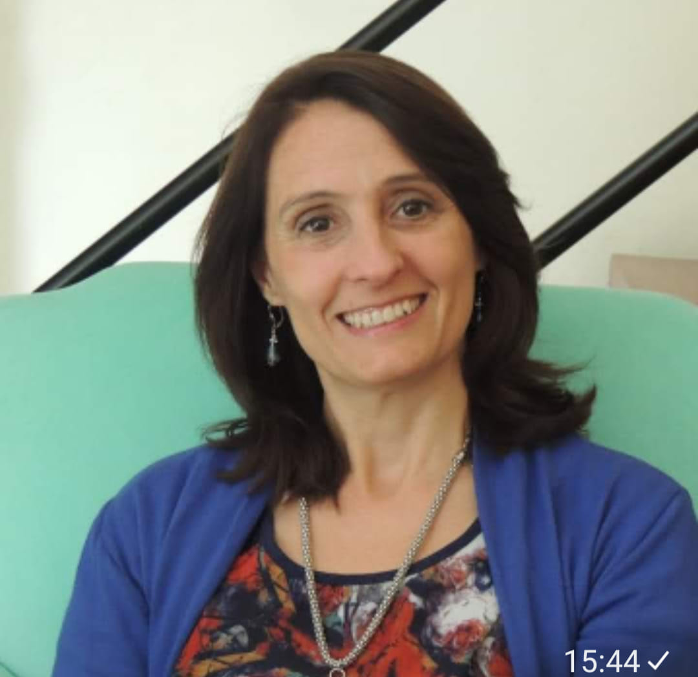
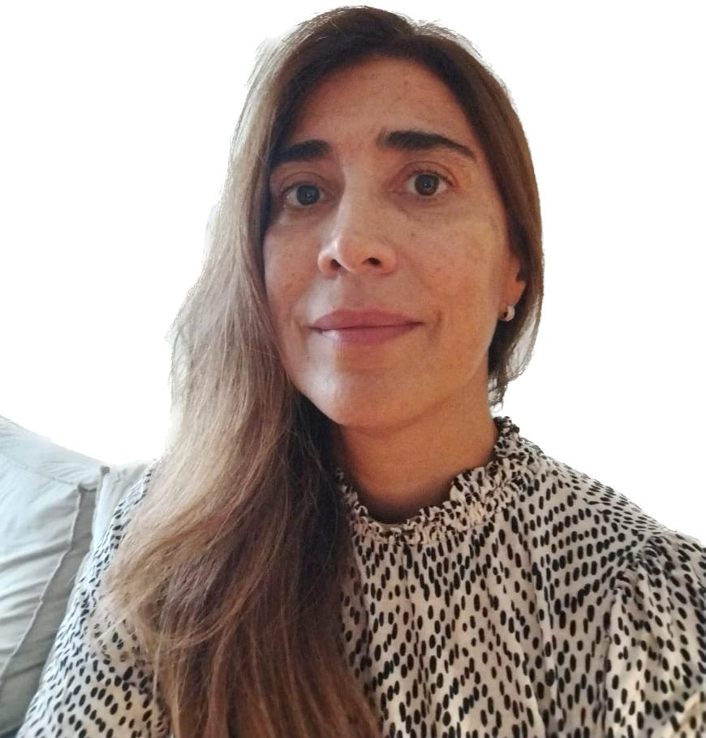
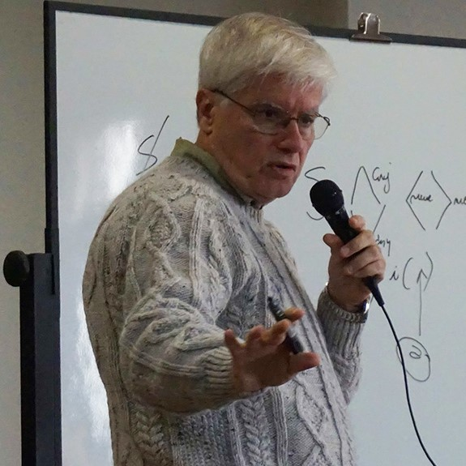
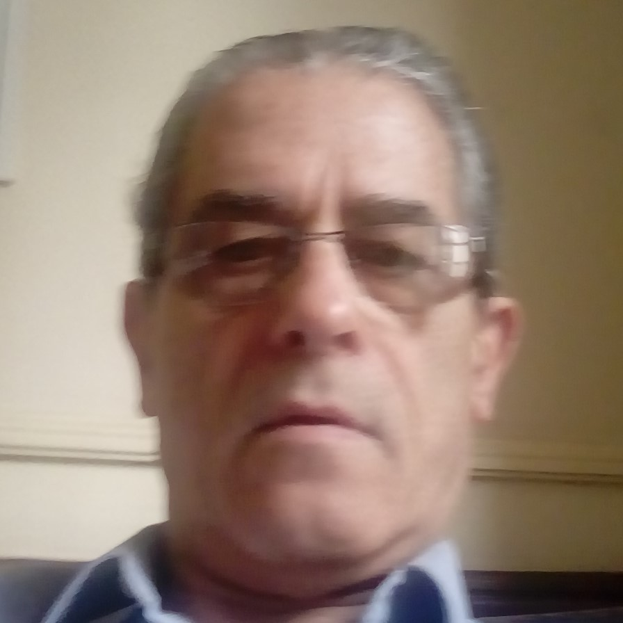
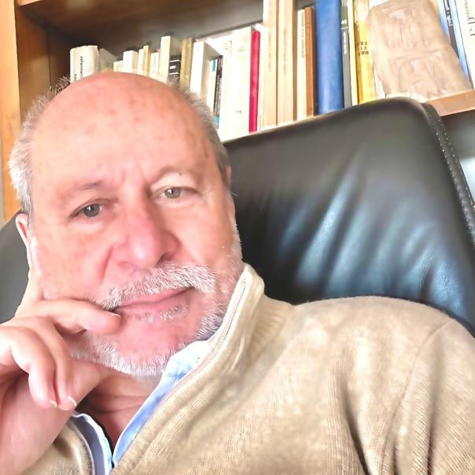
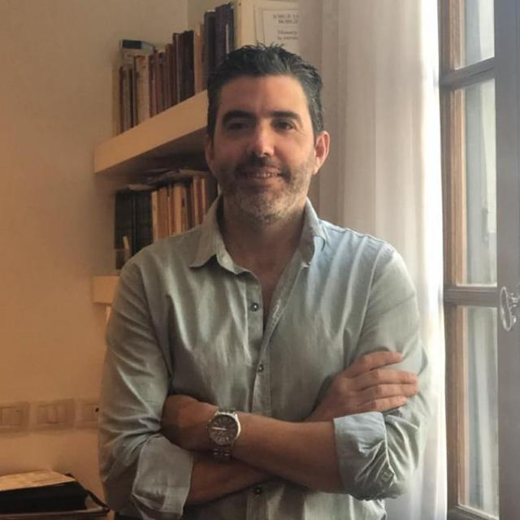
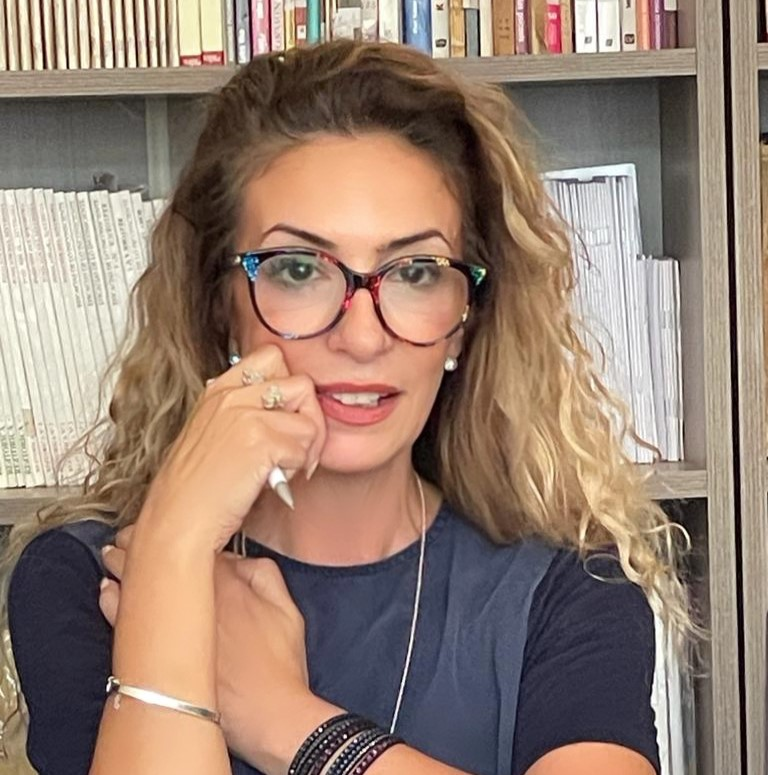
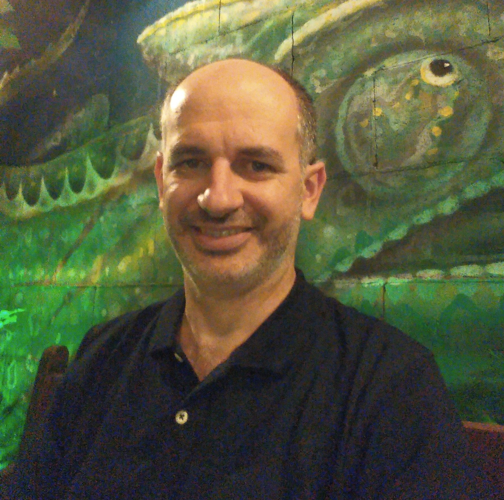
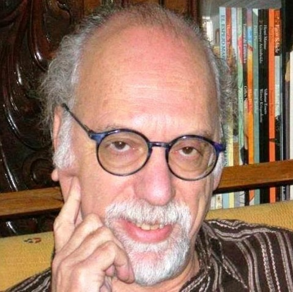
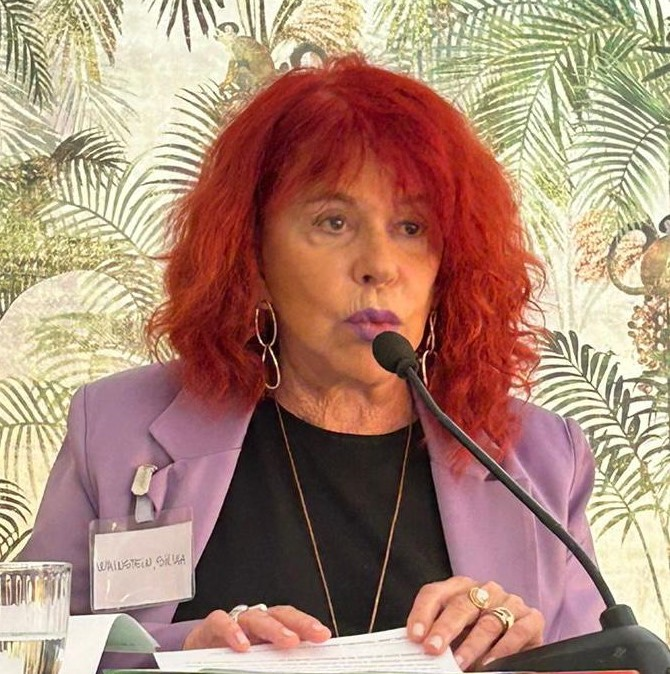

Psicoanalistas Colaboradores

Amalia Caseaux
Psicoanalista. AE. Miembro fundador de la Escuela Freud - Lacan de
La Plata – BsAs. Co-autora de los libros de "De los inicios y
finales de análisis", “Clínica con niños. De poeta y de locos
todos tenemos un poco”.

Ana Virginia Nion
Psicoanalista. Miembro de Maiêutica Florianópolis - Instituição
Psicanalítica - Brasil. Ha presentado y publicado trabajos y
ponencias en diferentes Jornadas y Congresos.

Daniel Paola
Psicoanalista. AME y AE. Escuela Freudiana de Buenos Aires. Autor
de numerosos artículos y libros, entre otros: “Inconsciente,
sentido y forclusión”, “¿Psicoanálisis finito o infinito?,
“Estallido del universo del discurso”.

Edgardo Feinsilber
Psicoanalista. Miembro Analista (M.A.) Mayeútica – Institución
Psicoanalítica – Buenos Aires. Autor numerosos artículos y libros
entre otros: “Constelaciones Pulsionales”, “Desde la
Transferencia”, “La soledad. Novaciones en el psicoanálisis”.

Enrique Rattin
Psicoanalista.AME. Miembro fundador de la Escuela Freudiana de
Montevideo. Uruguay. Autor del libro “Escritos psicoanalíticos“ .
Coautor del libro “Fin de análisis: Autorización del analista”.

Ernesto Vetere
Psicoanalista.Miembro de Lazos Institución Psicoanalítica de La
Plata.Autor de los libros: "La invención psicótica de la
transferencia" Y "El deseo del analista y la herejía del sujeto"

Gabriela Spinelli
Psicoanalista. Miembro Analista (M.A.) de Mayeútica - Institución
Psicoanalítica.Editora de la revista de psicoanálisis LaPsus
Calami. Co-autora del libro: “ Teoría y clínica en la obra de
Roberto Harari”.
Isidoro Vegh
Psicoanalista. AME. Miembro fundador de la Escuela Freudiana de
Buenos Aires. Autor de numerosos libros, entre otros: “Las
intervenciones del analista”, “Hacia una clínica de lo real”, “El
prójimo, enlaces y desenlaces del goce”, “Retorno a Lacan “.
Jose Tappan
Psicoanalista. Miembro fundador de GRITA - Grupo de Investigación
e Intervención psicoanalítica - México. Autor de numeros artículos
y libros entre otros: “Una introducción epistemológica al
psicoanálisis”, “La psicopatología como construcción de la
subjetividad”, “Pensar la clínica”.
Juan Canillo
Psicoanalista. Miembro de la Clínica del Cartel. Movimiento de
Psicoanálisis en Mar de Plata – Buenos Aires. Autor en “Escritos
para homenajear a la escritura freudiana de El malestar en la
cultura 90 años después”.

Luis Barragan
Psicoanalista. AME. Escuela Freudiana de Buenos Aires. Autora de:
“La letra interrogada” y “Escrituras en el análisis”.
Marcelo Edwards
Psicoanalista. Miembro de la Fundación Europea para el
Psicoanálisis. Autor de numerosos artículos y textos publicados en
España y otros países.

Maria Silva
Psicoanalista. Miembro de Trieb - Institucion Psicoanalitica -
Tucumán. Autora de numerosos articulos y textos publicados en
Argentina y en otros países.

Mauricio Maliska
Psicoanalista. Miembro de Maiêutica Florianópolis - Instituição
Psicanalítica - Brasil. Ha presentado ponencias en diferentes
Jornadas y Congresos.
Moises Azaretsky
Psicoanalista. Miembro Fundador de Trieb Institución
Psicoanalítica - Tucumán. Coautor de: Fin de análisis.
Autorización del analista.
Natatxa Carreras
Psicoanalista. Miembro fundador de GRITA (Grupo de Investigación e
Intervención psicoanalítica). Autora de numerosos articulos y
textos publicados en México y en otros países.
Patricia Leyac
Psicoanalista. AME. Escuela Freudiana de Buenos Aires. Autora de:
“La letra interrogada” y “Escrituras en el análisis”.

Rolando Karothy
Psicoanalista. AME. Escuela Freudiana de Buenos Aires. Miembro
fundador de Lazos- Institución Psicoanalítica de La Plata. Autor
de varios libros, entre otros: “Los tonos de la verdad”, “El sexo
y el crimen según Sade”, “El goce y la mirada”..

Silvia Wainsztein
Psicoanalista. AME. Miembro de la Escuela Freudiana de Buenos
Aires. Autora del libro: “Los tres tiempos del despertar sexual”.
Co-autora de “Adolescencia. Una lectura psicoanalítica”.